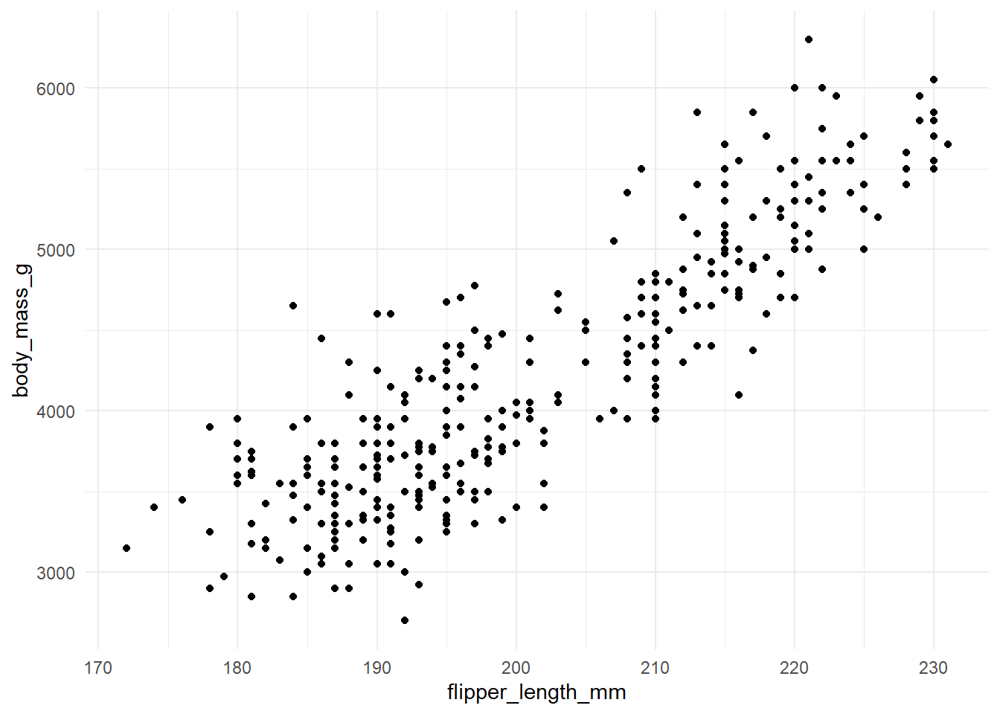
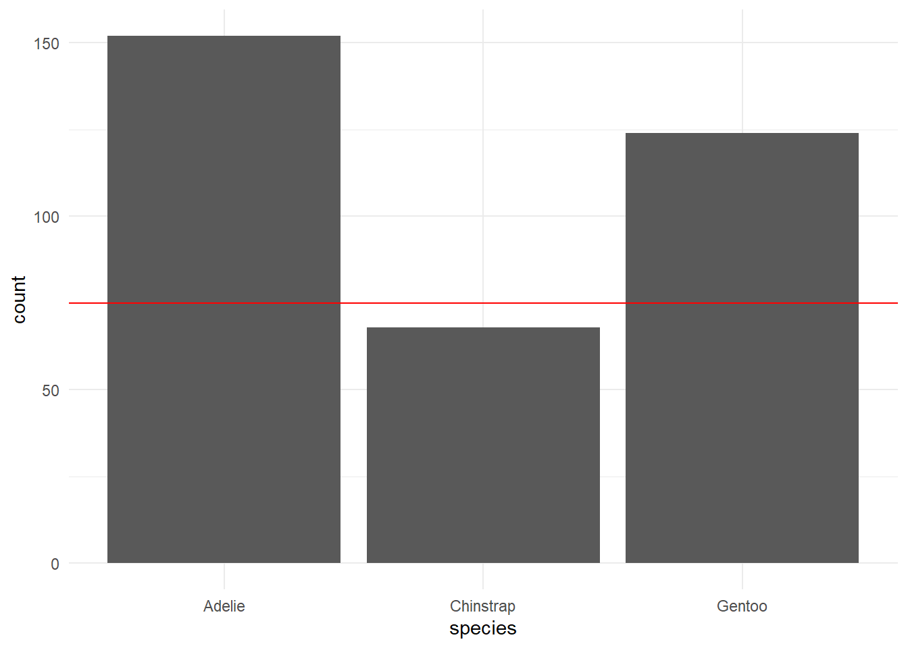
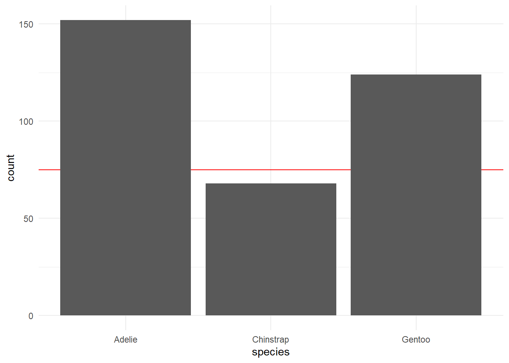
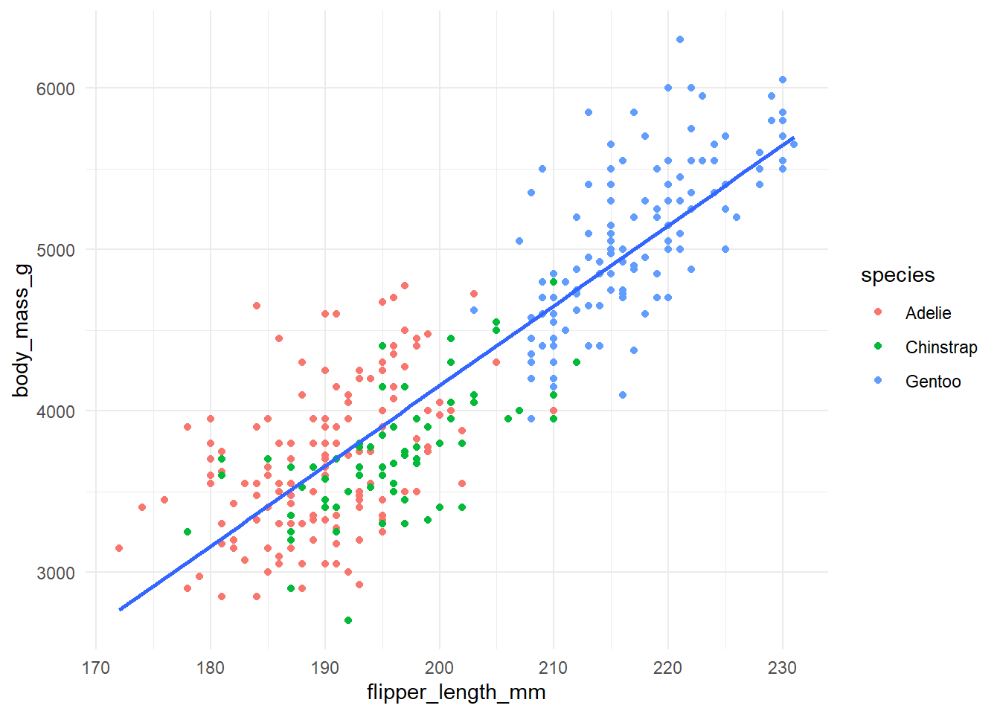
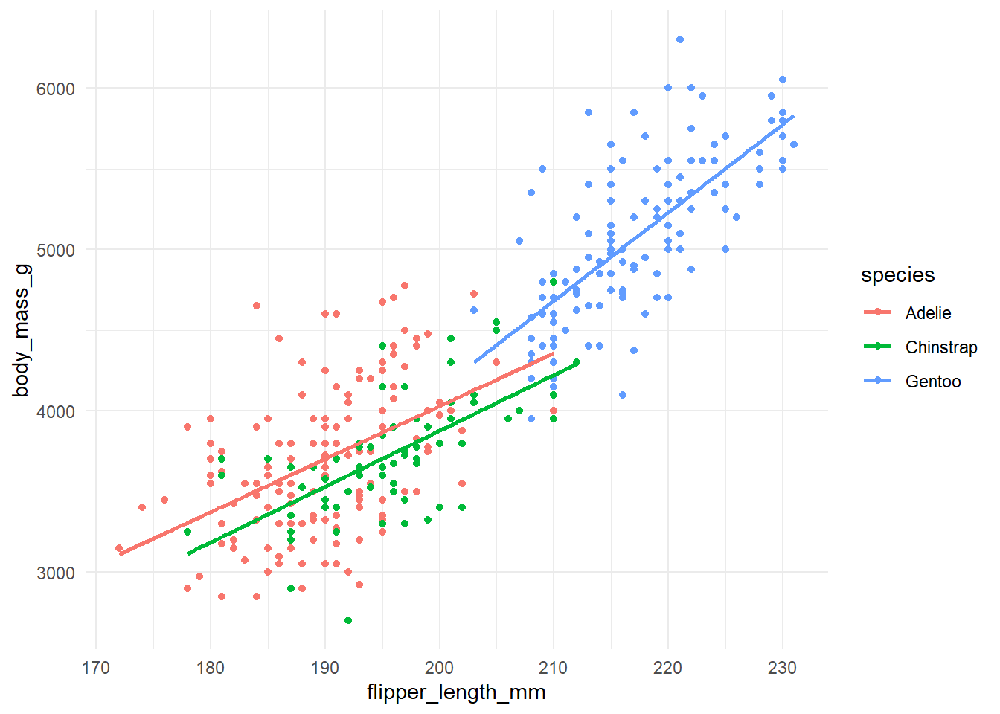
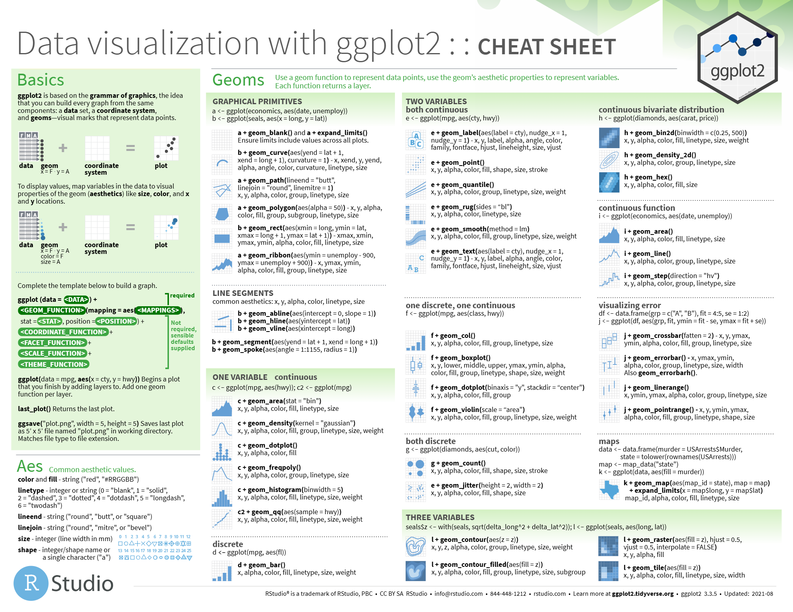
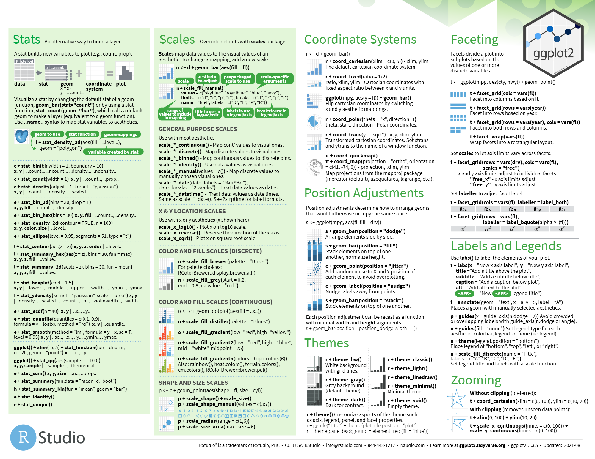

ggplot(penguins) +
geom_point(aes(x = flipper_length_mm,
y = body_mass_g)) +
theme_minimal()
ggplot es un paquete incluido en tidyverse que sirve para hacer gráficos.
Para usarlo, basta con escribir la función ggplot() e ir encadenando otras funciones que añadirán detalles al gráfico usando como enlace el +. Esta concatenación de comandos funciona como un lienzo, donde los comandos que añadas posteriormente añadirán detalles por encima de los anteriores. Es decir, el comando que esté más abajo en la secuencia será el que más adelante se visualice en el gráfico, y el primer comando situado tras el ggplot() el que se situará más al fondo.
# Gráfico 1
ggplot() +
geom_bar(data = penguins,
aes(x = species)) +
geom_hline(yintercept = 75,
color = "red") +
theme_minimal()# Gráfico 2
ggplot() +
geom_hline(yintercept = 75,
color = "red") +
geom_bar(data = penguins,
aes(x = species)) +
theme_minimal()

Los gráficos mostrados, salvo que se indique lo contrario, se han realizado con los datos de la librería palmerpenguins.
Entre los componentes básicos de los gráficos de ggplot se encuentran:
Capas (layer): son los elementos que se van añadiendo a la gráfica para crear el gráfico (geom_).
Escalas (scales): permiten modificar algunos aspectos más visuales de los gráficos, como los ejes, las formas, los tamaños y los colores.
Coordenadas (coord): modificaciones adicionales para modificar los ejes o el tipo de gráfico (p. ej. pasar el eje x al y, ).
Facet: permite emplear una variable extra para dividir al gráfico original en subgráficos.
Tema (theme): modificaciones estéticas sobre el fondo, el tipo y tamaño de la fuente, el grid…
Añadir la base de datos:
Antes del comando ggplot.Esta opción es muy útil ya que permite editar los datos de la base en la misma sucesión de comandos en la que se incluye el gráfico, sin necesidad de crear nuevos objetos:
Dentro del comando ggplot:
Dentro del comando del gráfico. Especialmente útil si se usan varias bases de datos distintas en el mismo gráfico.
Añadir las variables (aes):
Más de dos variables: aes(x = var_x, y = var_y, color/fill/shape/size/linetype = var_z)
También se pueden añadir variables extra dividiendo los gráficos mediante el uso de facet.
aes()?El aes se puede situar tanto dentro del comando ggplot() como dentro de los comandos específicos de cada gráfico geom_x(). Es muy importante tener en cuenta dónde situar las variables, ya que dependerá del gráfico que se está realizando. El aes irá dentro de ggplot() cuando las variables sean las mismas en todas las capas de geom_ que se vayan a emplear. Si existe alguna variable que sea particular de una de las capas, el aes que incluye esta variable debe ir dentro del geom_.
# GRÁFICO 1
penguins %>%
ggplot(aes(x = flipper_length_mm,
y = body_mass_g)) +
geom_point(aes(color = species)) +
geom_smooth(
method = "lm",
se = FALSE) +
theme_minimal()
# GRÁFICO 2
penguins %>%
ggplot(aes(x = flipper_length_mm,
y = body_mass_g,
color = species)) +
geom_point() +
geom_smooth(
method = "lm",
se = FALSE) +
theme_minimal()

Páginas con explicaciones sobre ggplot y muchos ejemplos:
R Charts - en español
El arte del dato bien contado - en español
Páginas para elegir colores:
Generadores de paletas:
Selector de colores: https://unscart.com/extension/color-picker/

